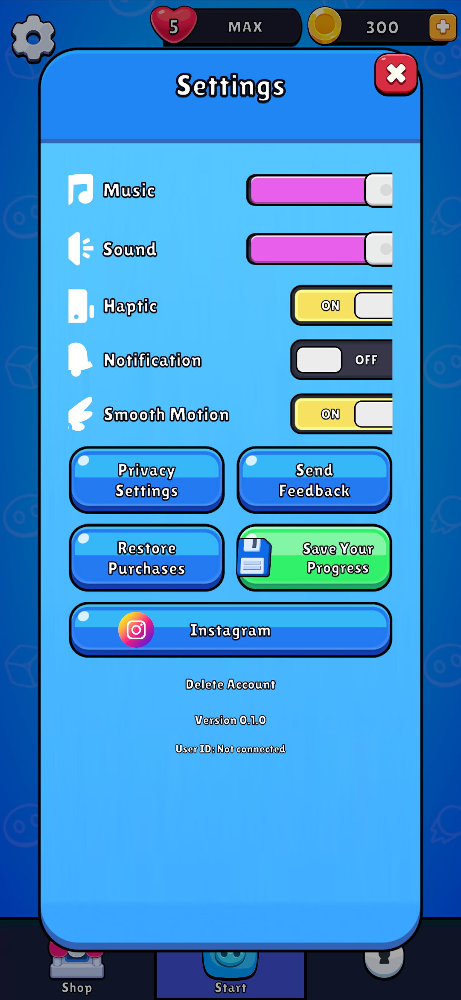
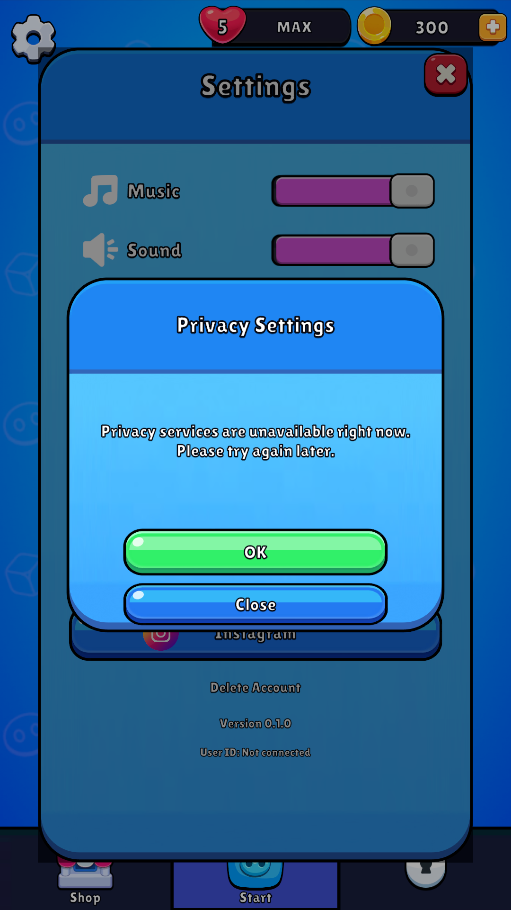
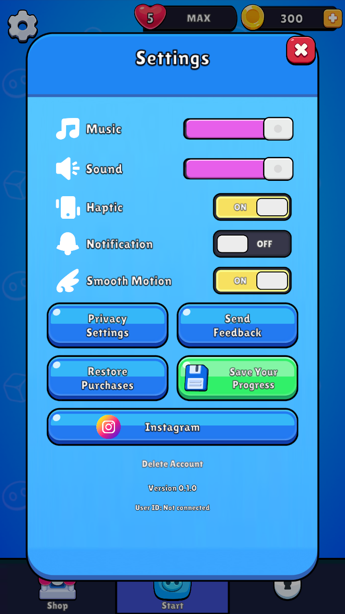
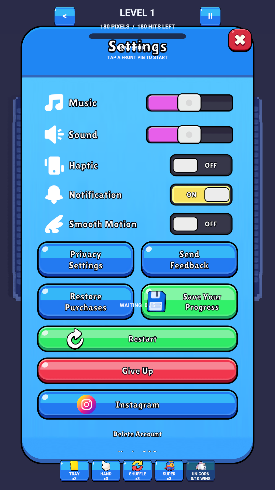
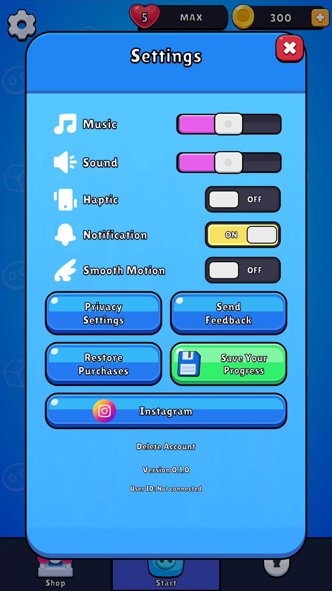

Original sample script/prefab GUIDs retained. One SafeArea,1080?1920/Match0.5, original art/Lilita preset, root DI and existing ProgressStore. Unity12/12 passed. No player build.
Source0.36.3 custom fields are stripped; native Settings screenshot is missing. These are clone Game View captures, not original screenshots or device evidence. Account/cloud/consent/support remain unavailable; notification saves a preference only.
Details/limitations ? Tests ? Capture receipts ? Source asset links




